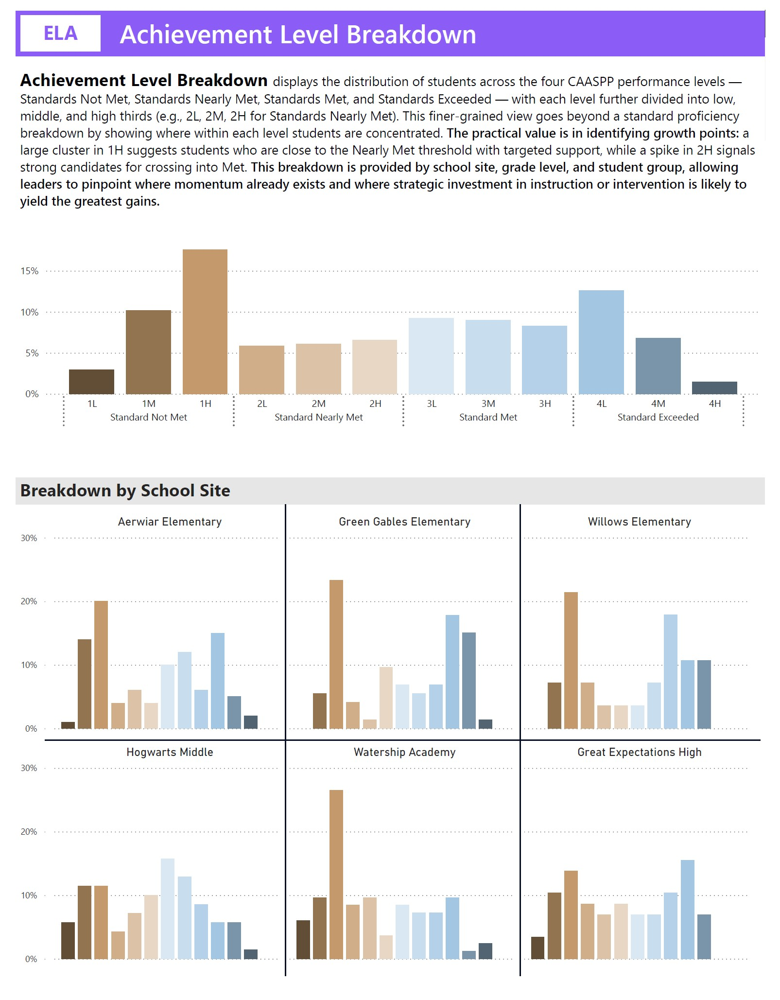
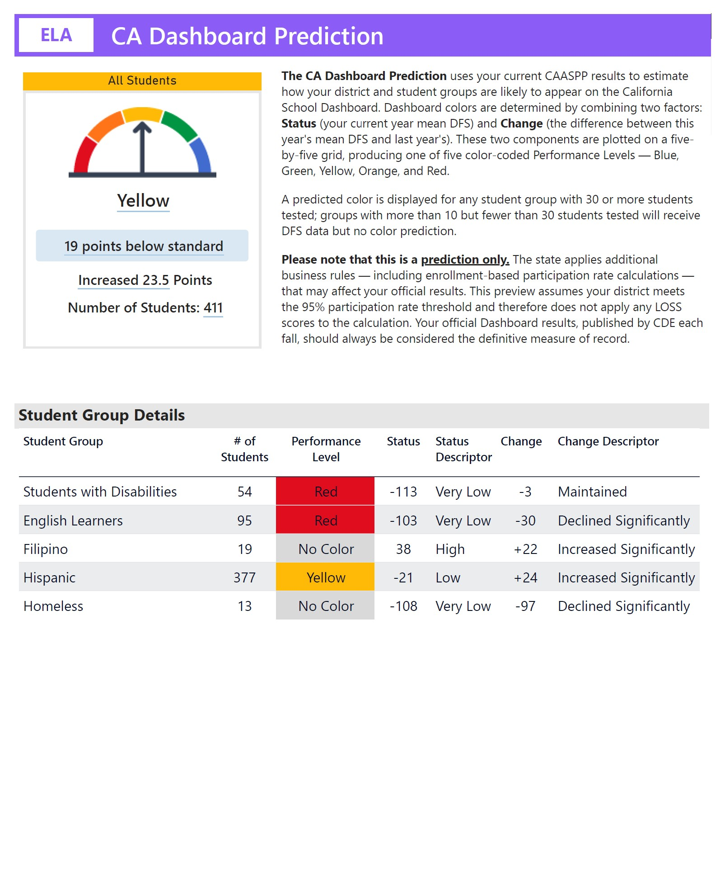
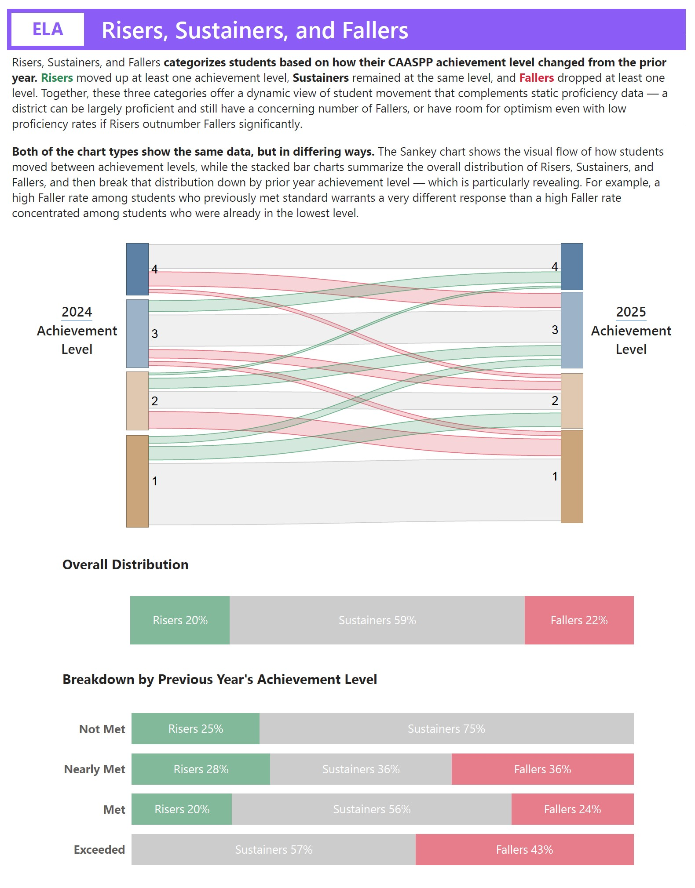
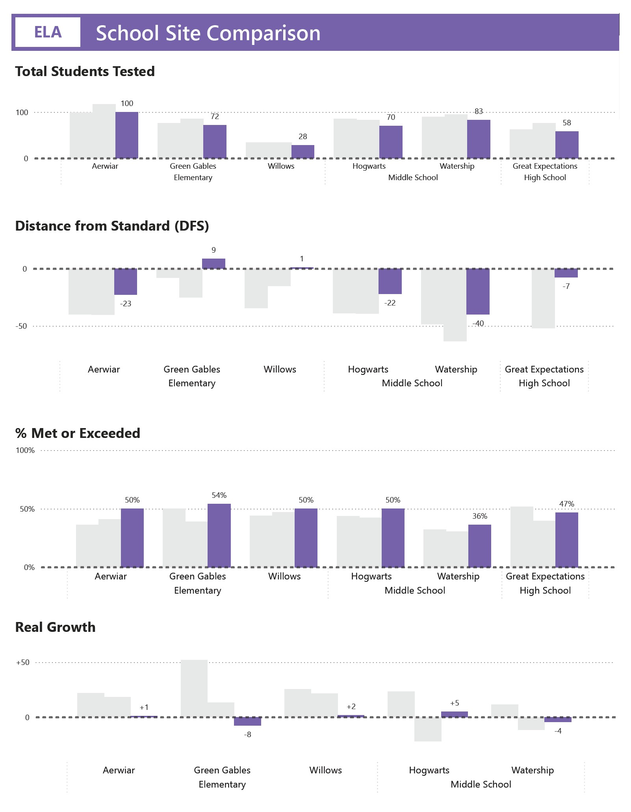

Every year, districts receive one of the most important pictures of how their students are performing. Your board wants answers. Your principals want direction. Your teachers want to know what it means for their classrooms. And it’s all packaged in one of the largest spreadsheets you’ll ever be handed.
We turn that raw data into clear reports, usable workbooks, and concrete next steps—delivered within 10 days of results dropping.
The TOMS data download is built for data analysts, not for a director of curriculum wearing four other hats. Distance from Standard, student growth, claim-level performance, subgroup disaggregations—it takes real expertise to pull meaningful signal from all of it.
Your CAASPP results feed directly into the California Dashboard, affect your accountability status, and shape the story your community tells about your schools. You need to understand your data—and be able to communicate it clearly—before someone else tells the story for you.
Most districts can pull a Percent Met and Exceeded or an achievement level breakdown from their SIS. That's a starting point—but it's not analysis. What's harder to get to is the trend across years, the subgroup disaggregation, the Dashboard prediction, the student-level picture, and the clear answer to "what do we actually do about this?" That's the gap we fill.
Every table, every chart, every graph has been constructed with purpose to answer the questions you’re asking. We bring over 15 years of hands-on experience working directly with California student data—in the classroom and in the district office. We’ve processed results and led data analysis at admin retreats and school site PLCs. We've mentored district analysts on better data display and coached leadership teams through the work of turning results into instructional action. This isn't a generic analytics product. It's a service built by someone who has sat with others like you and knows exactly what you need.
And your data is handled with the seriousness it deserves. All transmission, storage, and communication of student data is fully FERPA compliant. We use secure methods for file transfer—you upload your data to a protected folder; we process it and return your deliverables through the same secure channel. We never have direct access to your systems or any student records beyond what you choose to share.
Every deliverable is built from your district's real data. Here's a look inside the District Analysis Report—the centerpiece of the package. Click any page to enlarge.

Achievement Level Breakdown

CA Dashboard Prediction

Risers, Sustainers & Fallers

School Site Comparison
See exactly what your district would receive. Click below to view a sample of the District Analysis Report—built from a fictional district's data so you can see every section, every subject, and every visualization.
The package is built around six things every district should be able to say about their CAASPP results—but rarely can without dedicated support.
A clear picture of this year's performance across the metrics that matter most—Distance from Standard, Percent Met and Exceeded, and Achievement levels—for all students and for your key focus groups.
Multi-year trend analysis and individual student growth measurement—so you can see not just where you are, but whether your students are actually making progress from year to year.
Performance disaggregated by school site, grade level, and student group—so you can see not just how the district did overall, but where results differ and which populations deserve more attention or well-earned recognition.
Your CAASPP results feed directly into your California Dashboard accountability ratings. We show you what your current results suggest about your Dashboard trajectory, so you're not caught off guard.
A student-level view of who needs support and who deserves recognition, paired with specific, prioritized action steps for principals and instructional coaches. Grounded in your actual results, not generic recommendations.
Knowing your results is one thing. Building shared understanding with your leadership team is another. We give you a structured guide to facilitate a two-hour analysis session—with prompts designed to surface root causes, identify strengths, and align your team around priorities.
Six deliverables, each built from your district's actual data. Every item is designed for a specific audience and purpose—from your board to your instructional coaches.
Community Snapshot
A single-page public-facing summary of your results—clear visuals, plain language, ready to share with your community.
Leadership Brief
A three-page executive summary built for board presentations. High-level overview, key trends, and the context your board needs to have an informed conversation.
District Analysis Report
The backbone of the package. 80 pages of analysis—DFS, % Met and Exceeded, Real Growth, Dashboard predictions, achievement level breakdowns, and subgroup disaggregations for ELA and Math with clear visualizations and explanations throughout so that you know exactly where to direct your attention.
Student Data Workbook
Your student-level CAASPP results transformed into a clean, color-coded Excel workbook—formatted for sorting, filtering, and real analysis by your team.
Instructional Next Steps Report
Specific, prioritized action steps for principals and instructional coaches—organized by focus area and grounded in your actual results.
Leadership Data Analysis Guide
A ready-to-run guide for leading a two-hour data analysis session with your leadership team. Guided questions, facilitation prompts, and a clear flow from results to priorities. No outside facilitator needed.
The district package is a one-time flat fee of $2,100 — no per-student pricing, no ongoing subscription.
All six deliverables built from your district-level data. The right starting point for understanding your overall performance, communicating results to your board, and setting instructional direction for the year ahead.
Need the same analysis broken out for individual school sites? Site-level add-ons are available. Contact us to discuss scope and pricing based on your number of sites.
All deliverables are provided as a secure file package via cloud download link—PDFs, the Excel workbook, and the Leadership Data Analysis Guide all in one place, ready to use immediately.
Let's have a no-pressure conversation about your district's CAASPP results and whether the analysis package would be a good fit for your needs. Schedule a free 20-minute exploratory call to discuss your situation, ask questions, and see if we can help turn your data into clear action.